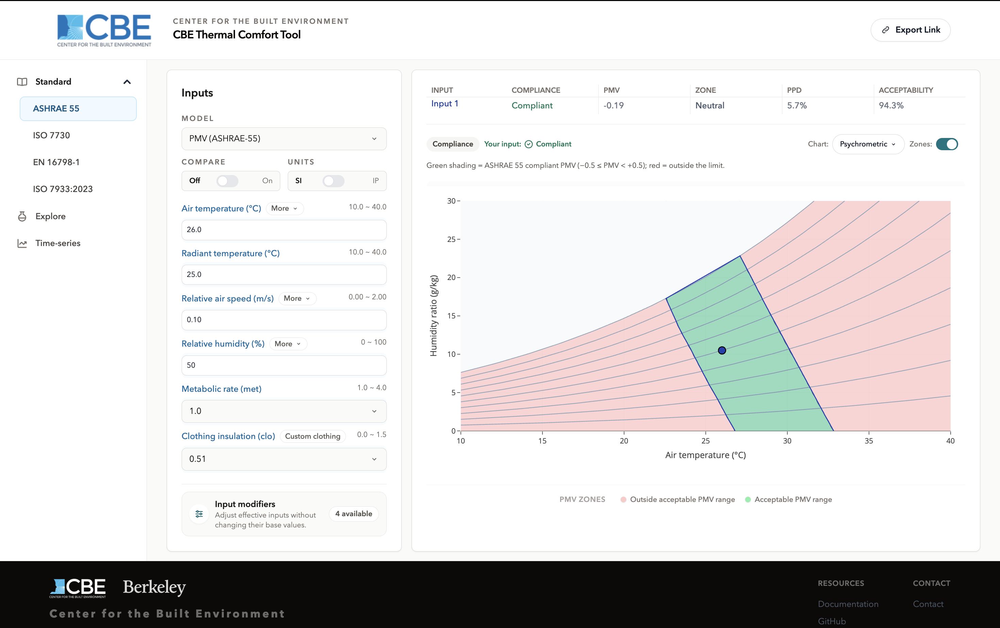
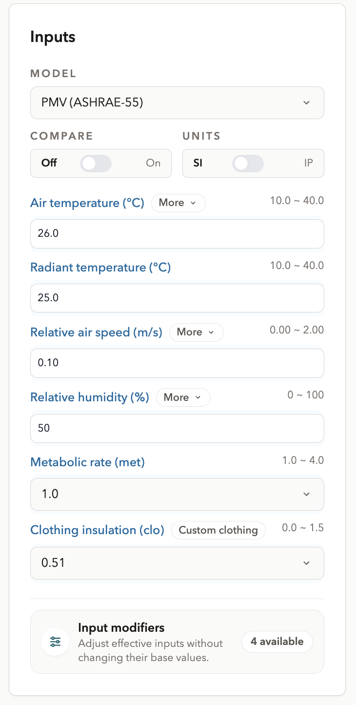

Main interface
Overview
This tool, developed at the Center for the Built Environment, UC Berkeley, performs thermal comfort and heat-strain calculations in your browser. Every workspace uses the same three-part screen: the workspace navigation on the left, the input panel beside it, and the results and charts to the right.
Results update as you type. There is no calculate button on the Standard and Explore workspaces, and nothing is sent to a server the calculation library runs locally.

Primary interface components
1. Workspace navigation
The left column lists the four standards under a Standard heading, then Explore and Time-series as separate entries:
| Workspace | Route |
|---|---|
| ASHRAE 55 | /standard/ashrae-55/ |
| ISO 7730 | /standard/iso-7730/ |
| EN 16798-1 | /standard/en-16798-1/ |
| ISO 7933:2023 | /standard/iso-7933/ |
| Explore | /explore/ |
| Time-series | /time-series/ |
Switching workspace keeps the values you have already entered wherever the new workspace uses the same quantity. Below the large breakpoint the navigation collapses into a drawer opened from the button in the header.
A URL can also name the model directly /standard/ashrae-55/pmv-ashrae/,
/explore/utci/ so a link can point at an exact model rather than just a workspace. A path that does
not match any workspace or model shows a not-found page rather than failing silently.
2. Input section
Values are typed directly or stepped with the arrow buttons. Above the input fields sit the controls that apply to the whole workspace:
- Model a searchable list of the models the current workspace allows. A compliance workspace offers only the models its standard defines; Explore offers all seven Explore-capable models.
- Compare an on/off toggle for evaluating up to three sets of inputs at once. See Compare mode.
- Units an SI/IP toggle. See Units (SI / IP).
- Share in the header, copies a link reproducing the current calculation. See Sharing a calculation.
Below the controls are the model's input fields. The set of fields is decided by the model, not by the workspace: Heat Index asks for two, PHS asks for six. Every field carries the accepted range for that model; a value outside it is marked and not calculated, and the last valid result stays on screen.
How temperature is entered
Two entry modes are available where the model supports them:
| Mode | You enter | Default on |
|---|---|---|
| Air temperature | Air and mean radiant temperature separately | PMV (both), UTCI |
| Operative temperature | A single combined value | Adaptive (both) |
Switching the mode changes which fields appear and which quantity carries the chart's temperature axis.
How humidity is entered
The two PMV models accept humidity in five equivalent forms: relative humidity, humidity ratio, dew point temperature, wet-bulb temperature and vapour pressure. All five describe the same state of the air enter whichever you have and the tool converts it. Relative humidity is the default.
Air-speed control mode
PMV on the ASHRAE 55 workspace adds one more setting: whether occupants have local control of the air speed. The standard permits higher air speeds where they do, so the setting changes the applicability limits used to validate the input. No other model has an equivalent.
Input modifiers
Where a model declares them, an adjustments button opens the input modifier editor. Modifiers do not add inputs to the model they compute one of the existing inputs from something easier to measure. They are available on the two PMV models only.
Clothing ensemble builder
On models that take clothing insulation, a builder assembles a clo value from a garment list organised by body zone, so you do not have to look the figure up.

3. Results display
The result table lists the model's outputs for each visible input set, with the compliance verdict where the model has one. Rows are declared by the model: PMV shows PMV and PPD, PHS shows limiting exposure time, rectal temperature and predicted water loss.
A point outside the standard's applicability range is reported as out of range rather than as a pass or a fail. The numbers are still shown; the standard simply does not claim to cover that state.
4. Chart panel
Each model declares its own charts, and the selector at the top of the panel switches between them. The same menu carries the export options. Axis pickers, the output selector, the legend and the band editor are covered in Charts and chart controls.
Changing model
Some model switches cannot carry every input across the target model may not use a quantity you have set, or may restrict it to a narrower range. When that happens the tool shows a warning before switching, so the change is never silent. Confirm to proceed, or cancel to stay where you are.
Where to go next
- Units (SI / IP) what the toggle changes, and what it does not.
- Compare mode three input sets side by side.
- Charts and chart controls axes, legend, bands and export.
- Sharing a calculation what a share link carries.